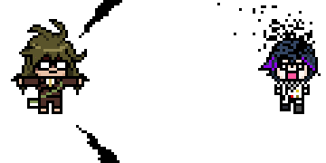

MIS HOBBIES
Acuariofilia
Actualmente yo practico la Acuariofilia (afición a la cría de peces u otros organismos) obvio apenas soy novata ya que tiene como 1 año que comenze en este mundo,como es obvio comenze con especies faciles de cuidar en si comenze con 4 pecesitos pero poco a poco fue creciendo la cantidad de estos hasta ahora tengo 20 peces, (10 de ellos que nacieron alli)30 caracoles, 1 cangrejito y un ajolote (estos 2 ultimos viviendo juntos). Me encanta esta afición ya que es muy emocionante, entretenido y relajante ver como pequeños organismos van creciendo y desarollando poco a poco.
En esta imagen se logran apreciar 6 de los pecesitos que nacieron ahí, tienen apenas 3 meses de edad
El es mi pequeño cangrejito se llama Don cangrejo haha y apenas tiene un mes conmigo
En esta imagen se logran apreciar a 6 adultos cebras y dos guppys (uno de ellos siendo apenas un pequeño alevin de apenas 1 mes)
Dibujar
Desde pequeña me ha encantando dibujar y gracias a mi papá he mejorado mi "habilidad", los dibujos de abajo tienen 2 años que los hice por eso no estan bien dibujados, actualmente puedo dibujar un poco más realista pero soy demasiado vaga para estarlo haciendo de echo puedo comenzar un dibujo y dejarlo a la mitad por mi flojera...Antes algunos de mis dibujos eran inspirados por otros actualmente ya no
Este dibujo fue por parte de un reto llamado "30 day drawing challenge" es el primer dibujo de la lista el nombre del dibujo se llama "killing my soul"
Este dibujo lo vi en facebook y me encanto entonces intente hacerlo y este fue el resultado :c
Este dibujo tambien forma parte del reto de "30 day drawing challenge" en este tenia que hacer una sirena con una mascara de gas y yo fui inspirandome en diferentes imagenes al final intente juntarlo todo cambiando algunas cosas y este fue el resultado
Escribir | Coser | Escuchar
Imagen1.-Antes creaba historias con genero de terror, misterio,espiritual y suspenso.. crear estas historias era muy relajante y me encantaba hacerlo, cree demasiadas pero solomente una de ellas he subido a internet, tambien me encantaba agregar aunque sea solo un dibujo a cada una de ellas.
Imagen2.-Cuando nacio mi sobrinito empeze con este pasatiempo de coser pequeños muñecos el primero que hice fue un gatito el cual le regale a el, y estos tres que se muestran fueron por un tiempo un llavero de la suerte para mi.
Imagen3.-Cada vez que hago la tarea, cocino o hago los quehaceres de la casa, me pongo ha escuchar podcasts de misterio, casos reales y de terror ya que me relajan demasiado, pero eso no quiere decir que todo el tiempo los escuche.
Las fotos de la derecha son las historias e investigaciones que escribia en mi libreta, en la de la izquierda es la historia que publique
Estos muñequitos que hice son creepypastas y miden de 10 a 11 centimetros

Estos son los podcasts que a veces suelo escuchar